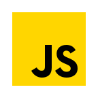
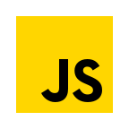

Hubert F. Espinola I
3rd Year BSCS - Batangas State University
Calamba City, Laguna, Philippines
ABOUT ME
Back-end Developer
3rd Year Student - BS Computer Science
My interests are security research, AI, algorithms, building APIs, and others that are related to problem solving.
Although I am not as good as the big mathematicians, logicians, and other experienced computer scientists out there,
I'm pretty confident that I can learn pretty much anything related to this field (well, depends on given time) :>
Most of my experiences are "google-article-youtube-indian-guy-taught" or "self-taught," and I really did enjoy the process.
I started focusing on cybersecurity back in junior high, mostly related to making reverse shells, trojans, and finding XSS injection vulnerabilities for pranks.
I soon became interested in mathematics and physics which lead to my interests in AI and problem solving.
Techstack
Below are the tools that I used for building backend systems. Just to be transparent, I need to review some of them (if not used for a very long time) before using again, since I don't remember all of them like a fc**ing robot.
Database

Programming Language
 



Techs/Frameworks